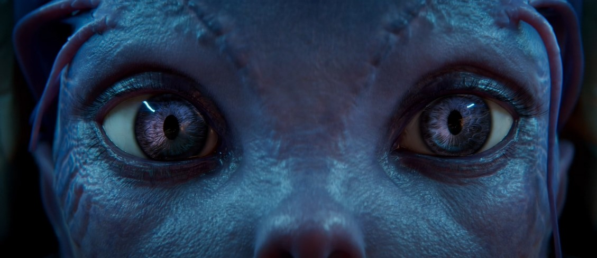

Axie Infinity
postado 02 abril 2022
Entenda como funciona o Axie Infinity, e seu sistema de recompensas em criptomoedas.
Axie Infinity é um jogo play-to-earn lançado em 2020, que se tornou extremamente popular com o boom das moedas digitais ao longo de 2021. O game conta com um sistema de recompensas em criptomoedas e uma gameplay de estratégia que mistura Pokémon com jogos de cartas. Para isso, você precisa possuir personagens, os Axies, que são também NFTs. Complexo? Não se preocupe, detalharei melhor como funciona o Axie Infinity.
Antes de tudo, é importante destacar que o Axie Infinity é um jogo que verdadeiramente recompensa seus jogadores, gerando renda através de criptomoedas que podem então ser convertidas para dólar, real e etc. No entanto, é necessário um investimento inicial para se poder jogar,
os preços de cada Axie variam muito, assim como a economia do jogo. Em seu ápice em julho de 2021, os monstrinhos não custavam menos de US$ 200. No entanto, os valores desses NFTs despencaram para cerca de US$ 25 em fevereiro de 2022.
Como funcionam as recompensas em criptomoedas?
Com ao menos três Axies em mãos para formar seu primeiro time, o jogador já pode entrar no game e ser recompensado em criptomoedas. O Axie Infinity possui dois sistemas de pagamentos, um que bonifica SLP ao jogador, e outro que dá AXS (Axie Infinity Shards). A primeira criptomoeda pode ser adquirida por todos os jogadores através do modo competitivo. a quantidade que cada jogador receberá em SLP dependerá de seu ranking no jogo e somente através de vitórias na arena. Cada jogador possui 20 energias, recuperados diariamente as 21h, horário de Brasília.
A “stamina” será consumida toda vez que o player entrar em uma partida no modo “Arena”. Jogar sem possuir energia não recompensará o player com a criptomoeda.
Acompanhe abaixo um vídeo explicativo com mais detalhes sobre esse "joguinho" que está dando o que falar.
Confira o site oficial.
Star Atlas
postado 03 abril 2022 
Star Atlas Game é um enorme jogo online multiplayer que se passa em um metaverso próprio de jogos virtuais. Além disso, está sendo construído em Unreal Engine 5, permitindo que o jogo apresente ambientes de qualidade cinematográfica e em tempo real. Isso porque Star Atlas se passa em um cenário futurista de ficção científica em 2620, onde três grandes facções surgiram e estão competindo por recursos e controle: humanidade, raças alienígenas e androides sencientes.
Dessa maneira, o jogo combina diferentes gêneros.
Desde que o projeto do jogo foi lançado, Star Atlas impressionou com seus planos ambiciosos de estabelecer uma economia digital descentralizada em sua plataforma, que é baseada na rede Solana, considerada por muitos como a principal concorrente da Ethereum, que segue como a mais utilizada para os jogos play-to-earn, DeFi e NFTs.
Por meio do motor gráfico Unreal Engine 5, o mesmo de sucessos como Fortnite e eFootball 2022 (antigo PES), Star Atlas já mostrou onde pretende chegar quando divulgou um trailer e disponibilizou seu primeiro minigame, onde os jogadores já podem ganhar criptomoedas. Agora, a intenção é ir além com a disponibilização contínua de módulos interativos.
A seguir um vídeo abaixo mais específico sobre esse universo que promete MUITO.
Confira o site oficial.